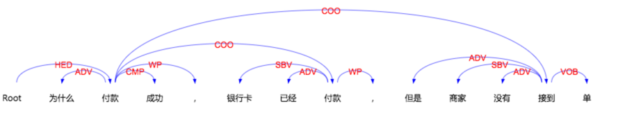

前段时间做句子主干词识别，其中有一个特征是聚类编号，即对表达意向相近的词归为一个编号，这样对于一些未登录词来说该特征显得十分重要。这就用到了word2vec工具，也就是将词语向量化，然后根据欧几里得距离或者余弦距离并使用k-means聚类算法对词语聚类。下面介绍word2vec的使用方法。
依存句法分析
主要进行句子的依存分析，标注出句子中各词语之间的语法关系，如下图，如SBV主谓关系，VOB动宾关系，COO并列关系等，得到的依存关系可以用于其他多项NLP任务，如信息抽取、情感分析、自动问答、机器翻译等。

使用CRF++用于中文命名实体识别
1.语料格式
CRF++ 可以用于分词、词性标注和命名实体识别等任务。
官方文档:
我们使用msra 2007用于命名实体识别的训练集和测试集，分为3个类别：人名(PER)、地名(LOC)、机构名(ORG),采用标准的BIEO方式处理，格式如下：12345678910111213141516171819202122是 O根 O据 O宋 B-PER神 I-PER宗 E-PER时 O， O官 O拜 O礼 B-ORG部 E-ORG郎 O杨 B-PER次 I-PER公 E-PER的 O“ O牧 O牛 O颂 O” O
通用命名实体识别方法及步骤
一、项目简介：
实体识别是nlp领域的基础工作，但是，目前了解到实体识别相关的项目主要都是基于词表来实现的。虽然词表的准确率很高，但是，词表的挖掘和维护的工作量也将很大，基于词表主要问题：1，词表覆盖率不全，需要不断的更新挖掘新词来补充词表；2，词表数目过大，随着业务的不断发展，挖掘的新词需要不断的扩充到词表中，词表会越来越大；3，词表的增大也伴随着维护的困难。所以，本项目的主要目的是从纯模型的角度来解决以上问题。传统的实体识别项目主要解决的是人名，地名，机构名，这三大实体类别。
通俗理解卷积神经网络(CNN)[转载]
1.人工神经网络
1.1神经元
神经网络由大量的神经元相互连接而成。每个神经元接受线性组合的输入后，最开始只是简单的线性加权，后来给每个神经元加上了非线性的激活函数，从而进行非线性变换后输出。每两个神经元之间的连接代表加权值，称之为权重（weight）。不同的权重和激活函数，则会导致神经网络不同的输出。
举个手写识别的例子，给定一个未知数字，让神经网络识别是什么数字。此时的神经网络的输入由一组被输入图像的像素所激活的输入神经元所定义。在通过非线性激活函数进行非线性变换后，神经元被激活然后被传递到其他神经元。重复这一过程，直到最后一个输出神经元被激活。从而识别当前数字是什么字。
C/C++中计算程序运行时间的方法
最近写完程序在公司需要测试每个句子输入到返回结果的运行时间，刚开始使用clock()函数是精确到毫秒，但是经过测试然并卵，总是返回0ms，程序运行时间太短，最后总结一下：
精确到毫秒ms
clock()计算的是CPU执行耗时，注意是CPU！如果有多个核并行，最后的结果是每个CPU上运算时间的总和！想要精确到毫秒，可以double(end -begin)*1000/CLOCKS_PER_SEC
一般来说，只要求精确到秒的话，time是很好使的
利用标注语料生成决策weights
1、之前两周利用主动学习的方式训练集
2、标注数据分离一小部分作为测试集利用LR分类器调参。
3、利用最有参数训练标注语料生成特征权重weights。
3、使用weights获得主干提取demo。
周一的时候做好了主干提取的Demo初始版本，经过测试效果不太理想
分析原因：训练集过少、覆盖面过窄、稳定性不高
这周的主要工作：
1、提取多种语料库中的资源做人工语料标注
2、增加部分特征，扩大特征维度
3、特征结构统一化，例如某个词的特征用词典表示，预定义好所有的key。暂时定义如下：
通过主动学习的方法进行自动语料标注
目前正在做句子主干提取方面的工作，主要方法是构建二分类器，提取句子分词之后每个词的特征来决定分词的取舍。由于需要标注大量的训练语料，采用人工的方法费时费力，于是采用主动学习的方法实现语料标注，我实现的步骤如下：
- 先对语料实现人工标注一部分
- 使用机器学习训练模型如SVM、LR对已经标注的语料训练，把为标注的语料作为测试集
- 为测试机样本产生标签及置信度（即标签的准确性的概率值）
- 通过观察为置信度设定一个阈值，当样本中的每个分词都满足这个阈值时，我们把这个自动标注好的测试样本加入到训练集中，在测试样本中取出这个样本
- 重复2-4步，直到剩余的测试样本中没有完全满足阈值的
输出剩余的测试样本
刚开始我觉得这种方法非常好，经过测试，大概20次迭代之后大概4/5的样本已经标注好了
经过导师指导发现这种方法并不可靠，因为你新添加的训练集也是之前训练集产生的，反复迭代只会过拟合。我们应该设定一个比较低的阈值，找到测试集中非常不确定的测试样本（所有这些测试样本的置信度很低），通常来说这些样本是最有“价值”的样本，我们对这一小部分采用人工标注，并放入到训练集中，反复几次。
Pagerank算法的具体实现
PageRank对网页排名的算法，曾是Google发家致富的法宝。以前虽然有实验过，但理解还是不透彻，这几天又看了一下，这里总结一下PageRank算法的基本原理。
1、什么是pagerank
PageRank的Page可是认为是网页，表示网页排名，也可以认为是Larry Page(google 产品经理)，因为他是这个算法的发明者之一，还是google CEO（^_^）。PageRank算法计算每一个网页的PageRank值，然后根据这个值的大小对网页的重要性进行排序。它的思想是模拟一个悠闲的上网者，上网者首先随机选择一个网页打开，然后在这个网页上呆了几分钟后，跳转到该网页所指向的链接，这样无所事事、漫无目的地在网页上跳来跳去，PageRank就是估计这个悠闲的上网者分布在各个网页上的概率。
单链表反转问题
题目：定义一个函数，输入一个链表的头结点，反转该链表并输出反转后链表的头结点。
1、非递归方式实现
|
|